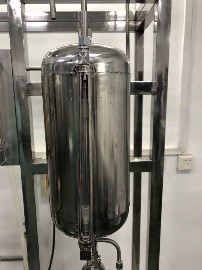

实验装置示意图（将光标放在图上具体位置时，会出现提示）
|
 |
 |
|
|
| 13-塔顶冷凝器 |
14 -回流比控制器 |
16-塔顶液回收罐 |
19-塔釜储料罐 |
20-塔釜冷凝器 |
实验步骤
- A. 实验操作
- 1. 全回流操作
- 1）打开塔顶冷凝器进水阀门，保证冷却水足量（60L/h 即可）。
- 2）记录室温，接通总电源开关（220V）。
- 3）调节加热电压约为 130 V, 待塔板上建立液层后再适当加大电压，使塔内维持正常操作。
- 4）当各块塔板上鼓泡均匀后，保持加热釜电压不变，在全回流情况下稳定 20 分钟左右。期间要随时观察塔内传质情况直至操作稳定。然后分别在塔顶、塔釜取样口用 50ml三角瓶同时取样，通过比重计或气相色谱仪分析样品浓度。
- 2. 部分回流操作
- 1）打开间接进料阀门和进料泵，调节转子流量计，以 2.0-3.0（l／h)的流量向塔内加料，用回流比控制调节器调节回流比为 R＝4，馏出液收集在塔顶液回收罐中。
- 2）塔釜产品经冷却后由溢流管流出，收集在容器内。
- 3）待操作稳定后，观察塔板上传质状况，记下加热电压、塔顶温度等有关数据，整个操作中维持进料流量计读数不变，分别在塔顶、塔釜和进料三处取样，用折光仪分析其浓度并记录下进塔原料液的温度。
- 3. 实验结束
- 1）取好实验数据并检查无误后可停止实验，此时关闭进料阀门和加热开关，关闭回流比调节器开关。
- 2）停止加热后 10 分钟再关闭冷却水，一切复原。
- 3）根据物系的 t-x-y 关系，确定部分回流下进料的泡点温度并进行数据处理。
- B. 计算机控制实验操作
-
1. 打开计算机在桌面找到应用程序双击进入。
-
2. 进入程序后左单击界面进入主控制界面，在主控制界面中同时显示出了各塔板温度，及相应的控制按键，可以控制加热开关、进料开关、回流比开关（红-关、绿-开），并且可以改变加热电压及回流比，来完成全回流实验和部分回流实验，取样及分析方法同上。进料量、进料口阀门开关及冷却水量还需手动调节同上。
-
3. 实验结束。
- 1）取好实验数据检查无误后可停止实验，关闭进料阀门、进料泵开关和加热开关，关闭回流比开关。
- 2）停止加热后 10 分钟再关闭冷却水，一切复原。
- 3）根据物系的 t-x-y 关系，确定部分回流条件下进料的泡点温度，并进行数据处理。
扫描下方二维码做预习题
结果与讨论
基本信息